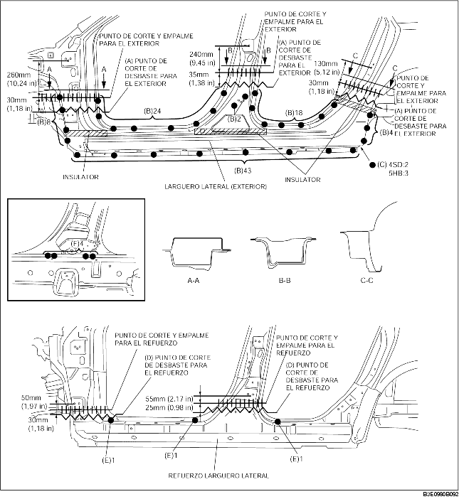

1. Efectuar el corte de desbaste en el área (A), taladrar los 99 puntos indicados por (B), los 2 (4SD) o 3 (5HB) puntos indicdos por (C), luego quitar el larguero lateral (exterior).
2. Efectuar el corte de desbaste en el área (D) y taladrar los 3 puntos indicados por (E).
3. Taladrar los 4 puntos indicados por (F) desde el interior y quitar el refuerzo del larguero lateral.
